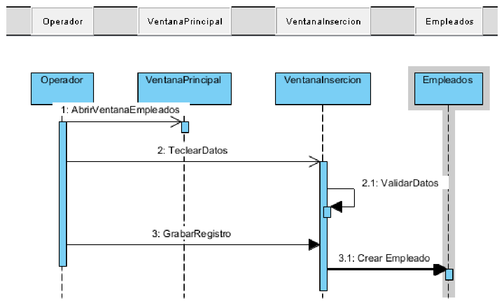
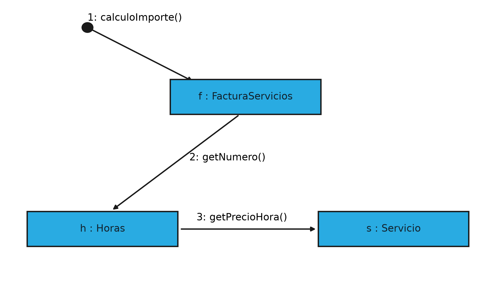

Los diagramas de interacción
Un diagrama de interacción describe un comportamiento emergente, es decir, un comportamiento que no pertenece a un objeto aislado sino al intercambio entre varios. Es la respuesta a la pregunta "¿qué se dicen los objetos entre sí?", y por eso es el diagrama que más se parece a lo que hará el programa cuando esté funcionando.
Esa es también su principal dificultad. Un diagrama de clases se puede dibujar con el enunciado delante y sin haber escrito una línea de código; un diagrama de interacción, en cambio, exige haber decidido ya qué objetos existen y qué operaciones ofrece cada uno. Es el diagrama que convierte un modelo de clases en un plan de ejecución, y ese paso suele ser el que revela que el modelo estaba incompleto. Por eso se dice que el diagrama de secuencia es a la vez el mejor consumidor y el mejor corrector del diagrama de clases.
Bajo el nombre de diagrama de interacción UML agrupa cuatro variantes. El diagrama de secuencias hace énfasis en el orden temporal de las participaciones de las distintas instancias. El diagrama de comunicaciones se basa directamente en una estructura compuesta y organiza los mensajes sobre los enlaces entre objetos. El diagrama de visión general de la interacción da una visión resumida del comportamiento emergente. Y el diagrama temporal se apoya en uno o varios diagramas de estados previos y pone el énfasis en los cambios de estado a lo largo del tiempo.
De las cuatro, la que se usa de verdad es la de secuencia, y la de comunicaciones aparece como una segunda vista del mismo contenido. Las otras dos son minoritarias y se reservan para sistemas con requisitos temporales estrictos, pero conviene saber que existen porque su nombre aparece en cualquier documentación de UML y porque su ausencia en un proyecto no es un olvido, sino una decisión.
El diagrama de secuencia
El diagrama de secuencia es una representación temporal de los objetos y sus relaciones. Enfatiza la interacción entre los objetos, los mensajes que intercambian y el orden en que se producen. Su lectura tiene truco: se lee siempre de arriba abajo y de izquierda a derecha, y ese orden de lectura es exactamente el orden de ejecución del programa.
La línea de vida es la línea vertical discontinua que baja desde cada participante. Representa el objeto a lo largo del tiempo, y el tiempo avanza hacia abajo: lo que está más arriba ocurre antes. Cada participante se escribe en la cabecera con la notación nombre : Clase, igual que en el diagrama de objetos, y la línea discontinua que cuelga de él indica que el objeto existe durante todo el diagrama.
La activación, o barra de activación, es el rectángulo estrecho que se dibuja sobre la línea de vida y marca el intervalo durante el cual el objeto está ejecutando una operación. Un objeto que no tiene barra está esperando; uno que la tiene está trabajando. Cuando una operación invoca a otra, la segunda barra se dibuja desplazada hacia la derecha y ligeramente más abajo, y ese desplazamiento en cascada es lo que hace visible quién llamó a quién sin necesidad de leer los mensajes. Mirando solo las barras se puede reconstruir la pila de llamadas.
Los mensajes son las flechas horizontales. Un mensaje síncrono, el habitual, se dibuja con la punta de flecha rellena e implica que el emisor espera a que el receptor termine antes de continuar. Un mensaje asíncrono se dibuja con la punta abierta e implica que el emisor sigue a lo suyo sin esperar respuesta, algo que se usa en sistemas con eventos o con colas de mensajes. El mensaje de retorno, que devuelve el control y el resultado, se dibuja con línea discontinua y punta abierta, aunque es frecuente omitirlo cuando el resultado es evidente, y esa omisión es una decisión de estilo, no un error.
Un auto-mensaje es una flecha que sale y vuelve al mismo objeto y representa una llamada a un método propio, normalmente un paso interno de una operación. Su presencia es una buena señal: significa que el objeto asume esa responsabilidad en lugar de delegarla, y su ausencia total en un diagrama grande suele indicar que todas las operaciones se han repartido entre objetos distintos sin dejar ninguna lógica dentro de ninguno.
Cuando el intercambio tiene condiciones o repeticiones, el diagrama de secuencia se apoya en los fragmentos combinados: marcos rectangulares con una etiqueta en la esquina que indica su naturaleza. El fragmento alt engloba alternativas excluyentes y equivale a un if/else; opt engloba un comportamiento opcional y equivale a un if sin rama alternativa; y loop engloba un fragmento que se repite. Sin ellos, un diagrama de secuencia solo puede contar caminos lineales, y los procesos reales rara vez son lineales.
El siguiente diagrama muestra un fragmento alt en funcionamiento. El cobro de una visita puede autorizarse o denegarse, y las dos posibilidades se representan dentro del marco, cada una con su condición:
sequenceDiagram
actor Recepcion
participant Cobro
participant Pasarela
Recepcion->>Cobro: cobrarVisita(idVisita)
activate Cobro
Cobro->>Pasarela: autorizar(importe, nif)
activate Pasarela
alt autorización concedida
Pasarela-->>Cobro: autorizado
Cobro->>Cobro: registrarPago()
Cobro-->>Recepcion: pagoConfirmado
else autorización denegada
Pasarela-->>Cobro: denegado
Cobro-->>Recepcion: pagoRechazado
end
deactivate Pasarela
deactivate CobroLa lectura del marco es directa: la línea horizontal divisoria separa las dos alternativas, y cada una lleva su condición escrita entre corchetes. Lo importante del ejemplo es que el diagrama no elige: refleja las dos posibilidades, y deja claro que el programa tendrá que contemplarlas ambas. Un diagrama de secuencia sin fragmentos se termina siempre en el camino feliz, y el camino feliz es el que menos problemas da en producción.
Un ejemplo de referencia

El diagrama representa la inserción de un empleado en la base de datos, vista como una conversación. En la cabecera aparecen cuatro participantes: Operador, VentanaPrincipal, VentanaInsercion y Empleados. Cada uno tiene su línea de vida bajando por la página.
La lectura se sigue de arriba abajo, y los números que acompañan a cada mensaje indican el orden. El primer mensaje, AbrirVentanaEmpleados, va del operador a la ventana principal y provoca que esta última cree la ventana de inserción. Después, TeclearDatos lleva la información hasta VentanaInsercion, que responde con un auto-mensaje ValidarDatos, dibujado como una flecha que sale y entra en su propia línea de vida porque es una comprobación interna. Cuando la validación es correcta, el flujo continúa con GrabarRegistro hacia el objeto Empleados, que finalmente ejecuta CrearEmpleado sobre sí mismo y deja el registro guardado.
Fíjese en el desplazamiento de las barras de activación. La barra de VentanaPrincipal es más alta que la de VentanaInsercion y empieza antes, porque la ventana principal sigue activa durante todo el proceso mientras la de inserción trabaja solo en su tramo. Ese detalle es el que permite saber, sin leer los mensajes, quién depende de quién.
Y fíjese también en lo que el diagrama revela sobre el reparto de responsabilidades. VentanaInsercion valida los datos por sí misma, pero no los graba: delega en Empleados. Esa separación es deliberada y es una buena decisión de diseño, porque una ventana que además grabase en la base de datos tendría dos motivos distintos para cambiar y se convertiría en la clase que nadie se atreve a tocar. El diagrama de secuencia es donde ese reparto se hace visible, y por eso es tan útil revisarlo antes de programar.
Cómo se elabora un diagrama de secuencia
Para construir uno desde cero se parte del escenario, nunca del dibujo. Recuperemos el escenario de RegistrarFacturaServicios del apartado de casos de uso, esta vez centrado en el cálculo del importe de una factura de servicios ya emitida: el gestor pide el importe total, el sistema consulta las horas prestadas de cada servicio y el precio por hora del catálogo, multiplica y suma, y devuelve el resultado.
De ese texto salen los participantes y los mensajes casi sin pensar, y el diagrama queda así:
sequenceDiagram
actor Gestor
participant FacturaServicios
participant Horas
participant Servicio
Gestor->>FacturaServicios: calculoImporte()
activate FacturaServicios
FacturaServicios->>Horas: getNumero()
activate Horas
Horas->>Servicio: getPrecioHora()
activate Servicio
Servicio-->>Horas: 30
deactivate Servicio
Horas-->>FacturaServicios: 12
deactivate Horas
FacturaServicios-->>Gestor: 360
deactivate FacturaServiciosMerece la pena comparar cada elemento del diagrama con el código que lo hará realidad, porque el paralelismo es exacto. Cada participant es una instancia de una clase del modelo, y cada operación que aparece en un mensaje es un método declarado en el diagrama de clases: calculoImporte() está en FacturaServicios, getNumero() en Horas y getPrecioHora() en Servicio. Las flechas continuas son llamadas que esperan respuesta y las discontinuas son los valores que se devuelven, que aquí son tres simples enteros.
Ese es el motivo por el que este diagrama es el mejor corrector de un modelo de clases. Si al dibujarlo aparece un mensaje que ninguna clase declara, falta una operación en el modelo. Si aparece un objeto que tiene que consultar datos que no le pertenecen ni puede alcanzar por una asociación, falta una relación. Y si un participante acumula demasiadas llamadas mientras los demás apenas hacen nada, el reparto de responsabilidades está desequilibrado.
El diagrama de comunicaciones
El diagrama de comunicaciones cuenta lo mismo que el de secuencia, pero con otra prioridad: en lugar de ordenar los mensajes en el tiempo, organiza los objetos en el espacio y dibuja los mensajes sobre los enlaces que los unen. La información temporal no desaparece, sino que se expresa con una numeración jerárquica.

En la figura hay tres objetos, f : FacturaServicios, h : Horas y s : Servicio, unidos por sus enlaces. El círculo relleno marca el punto de partida y el mensaje 1: calculoImporte() entra en la factura. A partir de ahí, el mensaje 2: getNumero() va de la factura hacia las horas, y el 3: getPrecioHora() va de las horas hacia el servicio.
La numeración es la clave para leerlo. Un mensaje numerado como 2.1 indicaría que se ha enviado durante la ejecución del mensaje 2, es decir, un anidamiento, y 3.1 tendría el mismo significado respecto al 3. Ese sistema de numeración reproduce exactamente el desplazamiento en cascada de las barras de activación del diagrama de secuencia: los dos diagramas son semánticamente equivalentes y se puede pasar de uno a otro sin perder información.
La elección entre ambos es de énfasis, y conviene tener claro cuándo cada uno se lee mejor. El de secuencia gana cuando lo que importa es el orden, como en un protocolo de comunicación o en una operación con pasos estrictamente encadenados. El de comunicaciones gana cuando lo que importa es el mapa de colaboraciones, como al revisar si dos objetos se conocen demasiado o si una clase está en el centro de todas las conversaciones. En un proyecto real se usa el de secuencia casi siempre, y el de comunicaciones aparece como una vista de apoyo cuando el diagrama de secuencia se ha vuelto ilegible por el número de participantes.
Las otras dos variantes
El diagrama de visión general de la interacción es un diagrama de actividades en el que los nodos no son pasos de un proceso, sino interacciones completas. Su utilidad es la de un índice: en un sistema con veinte escenarios distintos, permite ver cómo se encadenan sin necesidad de abrir los veinte diagramas de secuencia, y sirve además para detectar interacciones que faltan. Un caso de uso que no aparece en ninguna parte del mapa es un caso de uso que nadie ha diseñado todavía.
Su notación es la del diagrama de actividades, con la particularidad de que cada nodo se identifica con el nombre del caso de uso que representa. Eso lo hace muy útil en la documentación de entrega, porque un lector que no conoce el sistema puede entender de un vistazo el recorrido completo de una operación compleja antes de bajar al detalle de cada paso.
El diagrama temporal, por último, es el menos utilizado de los cuatro. Se apoya en uno o varios diagramas de estados y muestra cómo evolucionan esos estados a lo largo de un eje de tiempo explícito, con las restricciones de duración y de plazo dibujadas sobre el mismo eje. Aparece en sistemas donde el tiempo es un requisito de primer nivel, como protocolos de comunicaciones, sistemas de control industrial o aplicaciones de tiempo real, y su notación es tan específica que rara vez se incluye en un manual de iniciación.
Conviene, aun así, saber reconocerlo y saber cuándo hace falta. Si en un enunciado aparecen expresiones como "en menos de dos segundos", "cada treinta segundos" o "antes de que venza el plazo", el diagrama de secuencia no tiene forma de representar esa restricción y el temporal sí, porque su eje horizontal es precisamente el tiempo. Ignorar esos requisitos es una de las causas más frecuentes de que un sistema funcione en las pruebas y falle en producción.